UNIDAD 4. Elaboración de organigramas
UNIDAD 4. ELABORACIÓN DE ORGANIGRAMAS
4.1 Concepto de organigrama
4.2 Objetivo y funciones de un organigrama
4.3 Tipos de organigrama
4.4 Ventajas y desventajas del organigrama
4.5 La estructura de la organización
4.6 Etapas para la elaboración de un organigrama
4.7 Mantenimiento organizacional
Objetivo de la Unidad 4
Comprender la importancia de los organigramas como herramientas de representación de la estructura organizacional, identificando sus objetivos, funciones, tipos, ventajas y limitaciones, para desarrollar organigramas de manera ordenada y mantenerlos actualizados de acuerdo con las necesidades y cambios de la organización.
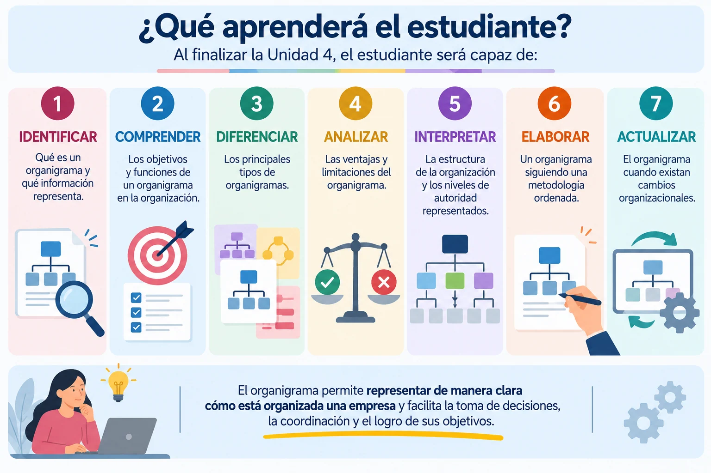
4.1 Concepto de Organigrama
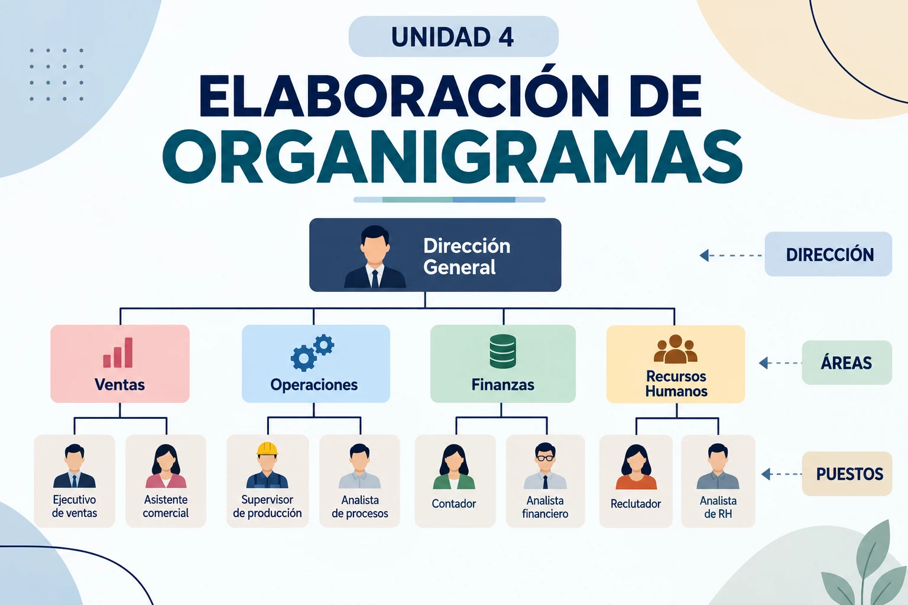
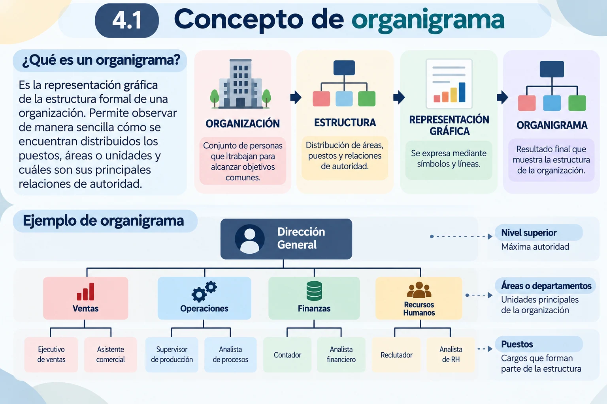
4.2 Objetivo y funciones de un organigrama
4.2 Objetivo y funciones de un organigrama
Ya sabemos que el organigrama representa gráficamente la estructura formal de una organización. Ahora debemos comprender para qué se utiliza.
Objetivo de un organigrama
El objetivo principal de un organigrama es mostrar de manera clara y ordenada cómo está estructurada formalmente una organización, facilitando la comprensión de sus niveles jerárquicos y relaciones de autoridad.
Permite que una persona pueda ubicarse dentro de la estructura y responder rápidamente preguntas como:
¿Dónde se encuentra mi puesto?
¿De quién dependo?
¿Qué áreas forman la organización?
¿Cómo se distribuye la autoridad?
El organigrama convierte una estructura que puede resultar compleja en una representación visual fácil de consultar.
Funciones de un organigrama
Además de representar la estructura, cumple diferentes funciones dentro de la organización.
Orientar
Ayuda al personal, especialmente a quienes se incorporan a la organización, a reconocer las áreas y su ubicación dentro de la estructura.
Clarificar la autoridad
Permite identificar las relaciones formales de dependencia y supervisión.
Facilitar la comunicación
Ayuda a reconocer qué áreas o responsables deben relacionarse para determinados asuntos.
Apoyar la organización del trabajo
Permite observar cómo están distribuidas las unidades y puestos dentro de la empresa.
Servir como herramienta de análisis
Al observar la estructura completa pueden detectarse situaciones que requieren revisión, por ejemplo, demasiados niveles jerárquicos o una concentración importante de puestos bajo una sola área.
Apoyar cambios organizacionales
Cuando la organización crece, elimina áreas, crea nuevos puestos o redistribuye responsabilidades, el organigrama permite visualizar cómo quedará la nueva estructura.
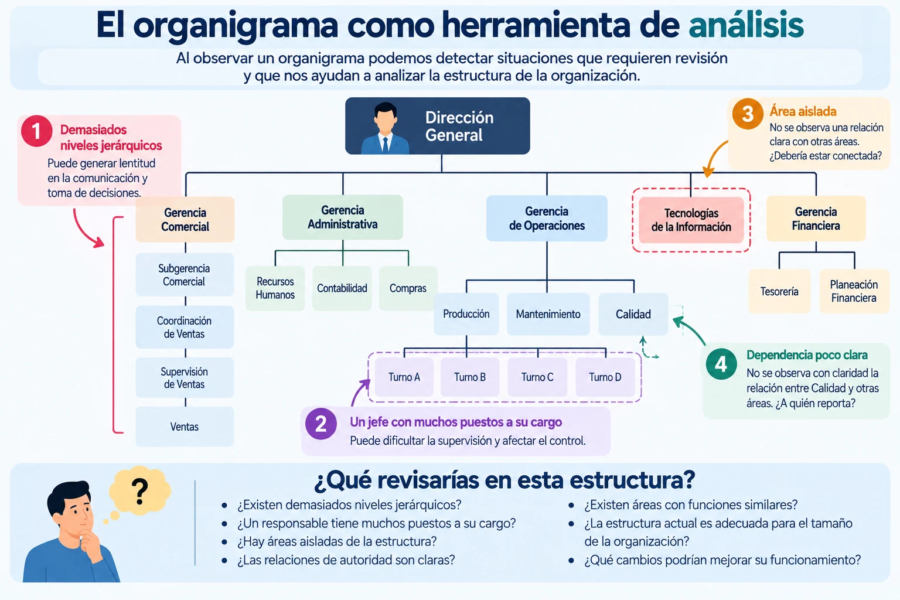
Ejemplo:
Supongamos que observamos esta estructura:
DIRECCIÓN GENERAL
↓
GERENCIA
↓
SUBGERENCIA
↓
COORDINACIÓN
↓
SUPERVISIÓN
↓
PERSONAL OPERATIVO
El organigrama permite observar que existen varios niveles entre la Dirección y el personal operativo.
No podemos concluir inmediatamente que la estructura está mal, pero sí podemos preguntar:
¿Todos esos niveles son necesarios para el funcionamiento de la organización o alguno está generando retrasos en la comunicación y toma de decisiones?
Ahí el organigrama se convierte en una herramienta para iniciar el análisis organizacional.
Un organigrama también comunica cambios
Imaginemos que una empresa crea un nuevo departamento de Tecnologías de la Información.
No basta con anunciar:
“A partir de ahora existe el departamento de TI”.
La organización necesita definir:
dónde estará ubicado → de quién dependerá → qué puestos lo integrarán → con qué áreas se relacionará formalmente.
Al actualizar el organigrama, el cambio puede visualizarse dentro de la estructura completa.
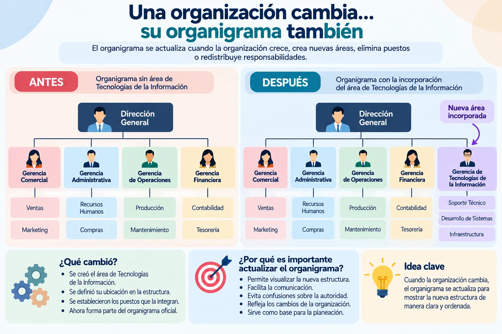
El organigrama no solo muestra la estructura: también orienta, comunica y apoya el análisis de la organización.
4.3 Tipos de organigrama
4.3 Tipos de organigrama
Los organigramas pueden clasificarse de diferentes maneras.
Según su forma de representación
Organigrama vertical
La autoridad se representa de arriba hacia abajo. Los puestos de mayor jerarquía aparecen en la parte superior y los niveles subordinados debajo.
Es uno de los formatos más fáciles de interpretar.
Organigrama horizontal
La estructura se desarrolla de izquierda a derecha. El nivel de mayor autoridad se encuentra generalmente a la izquierda y los demás niveles continúan hacia la derecha.
Organigrama circular
La máxima autoridad se coloca en el centro y los demás niveles se distribuyen alrededor mediante círculos concéntricos.
Organigrama mixto
Combina características del vertical y horizontal. Resulta útil cuando la estructura contiene muchas áreas o niveles y un solo sentido de representación ocuparía demasiado espacio.
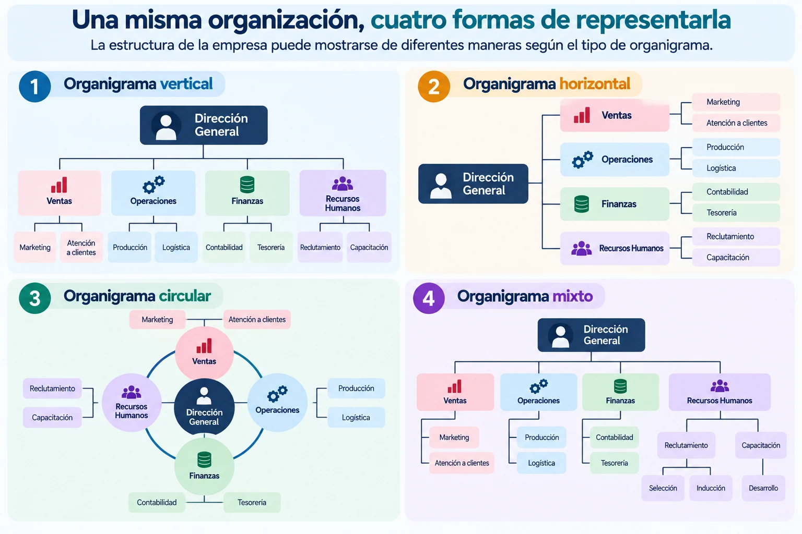
Según la información que presentan
También podemos encontrar organigramas con diferente nivel de detalle.
GENERAL: presenta las principales unidades de la organización.
ESPECÍFICO: muestra con mayor detalle la estructura de un área determinada.
Por ejemplo, un organigrama general puede mostrar:
DIRECCIÓN → VENTAS – OPERACIONES – FINANZAS – RH
Mientras que uno específico de Recursos Humanos podría mostrar:
GERENCIA DE RH → RECLUTAMIENTO – NÓMINA – CAPACITACIÓN – RELACIONES LABORALES
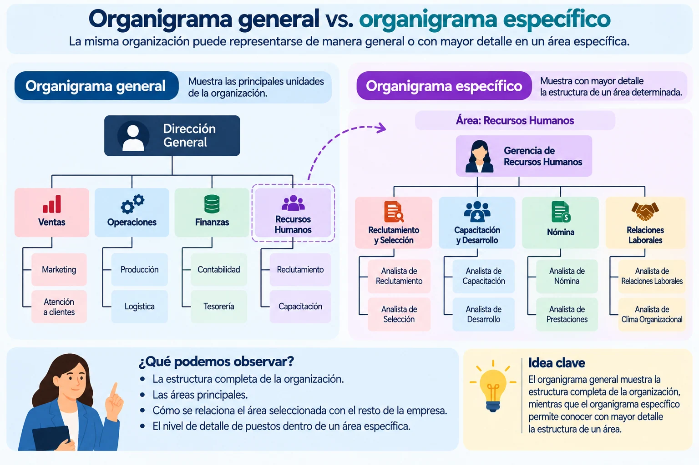
La misma organización puede representarse de distintas maneras dependiendo de la información que se necesita comunicar.
4.4 Ventajas y desventajas del organigrama
4.4 Ventajas y desventajas del organigrama
El organigrama es una herramienta útil para comprender la estructura formal de una organización, pero tiene un alcance limitado. Por eso es importante distinguir qué información nos aporta y qué información no podemos obtener únicamente de él.
Ventajas
Un organigrama permite:
- Visualizar la estructura de manera rápida y ordenada.
- Identificar la autoridad y las relaciones formales de dependencia.
- Ubicar áreas y puestos dentro de la organización.
- Facilitar la orientación del personal de nuevo ingreso.
- Apoyar el análisis organizacional, al hacer visibles algunos aspectos de la estructura.
Desventajas o limitaciones
El organigrama también tiene límites:
- Puede quedar desactualizado cuando existen cambios que no se incorporan.
- No muestra las relaciones informales que surgen entre las personas.
- No explica las funciones detalladas de cada puesto.
- No representa completamente los procesos, porque muestra principalmente la estructura.
- Puede simplificar una realidad compleja, especialmente en organizaciones grandes.
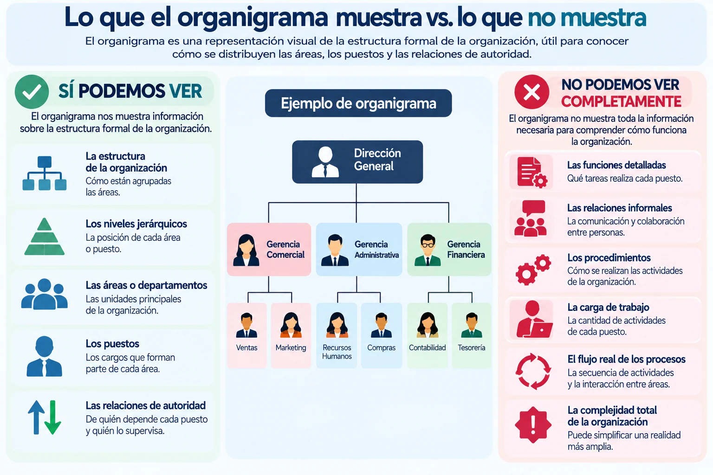
Un organigrama debe entenderse como una parte de la información organizacional, no como una descripción completa de cómo funciona una empresa.
Por ejemplo:
ORGANIGRAMA → ¿Quién depende de quién?
DESCRIPCIÓN DE PUESTO → ¿Qué hace cada puesto?
PROCEDIMIENTO → ¿Cómo se realiza una actividad?
DIAGRAMA DE PROCESO → ¿Cómo fluye el trabajo?
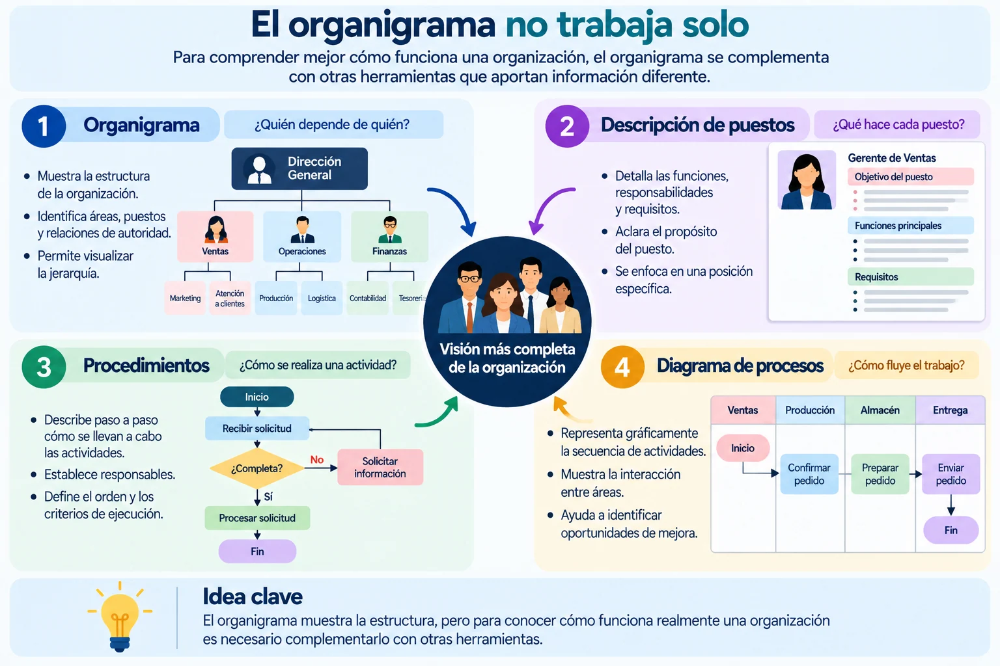
4.5 La estructura de la organización
4.5 La estructura de la organización
La estructura organizacional establece cómo se distribuyen formalmente las áreas, puestos, responsabilidades y niveles de autoridad.
El organigrama es la herramienta que permite hacer visible esa estructura.
Podemos distinguirlos así:
ESTRUCTURA ORGANIZACIONAL = cómo está organizada la empresa
ORGANIGRAMA = cómo representamos gráficamente esa organización
De la estructura al organigrama
Antes de dibujar un organigrama debemos conocer cómo está organizada realmente la empresa.
Por ejemplo, una organización establece que:
Dirección General es el nivel superior.
De ella dependen Ventas, Operaciones, Finanzas y Recursos Humanos.
De Recursos Humanos dependen Reclutamiento, Nómina y Capacitación.
Esa información constituye parte de la estructura.
Cuando la representamos mediante recuadros y líneas, obtenemos el organigrama.
ESTRUCTURA REAL → IDENTIFICAR ÁREAS Y PUESTOS → ESTABLECER RELACIONES → REPRESENTAR → ORGANIGRAMA
La posición tiene significado
La ubicación de un puesto dentro del organigrama no debe ser arbitraria.
La posición y las líneas ayudan a interpretar:
NIVEL — dónde se encuentra el puesto dentro de la jerarquía.
DEPENDENCIA — de qué puesto o unidad depende.
AUTORIDAD — qué unidades se encuentran bajo su responsabilidad.
Por eso, antes de colocar un recuadro debemos preguntarnos:
¿Dónde pertenece este puesto dentro de la estructura?
Ejemplo:
Una empresa tiene:
Dirección General
Gerencia Administrativa
Recursos Humanos
Nómina
No debemos colocar los cuatro elementos simplemente donde haya espacio.
Primero debemos reconocer su relación:
Dirección General
↓
Gerencia Administrativa
↓
Recursos Humanos
↓
Nómina
El organigrama debe representar esa relación de manera clara.
Primero comprendemos la estructura; después elaboramos el organigrama.
Un organigrama visualmente atractivo pero que no represente correctamente las relaciones organizacionales no cumple su función.
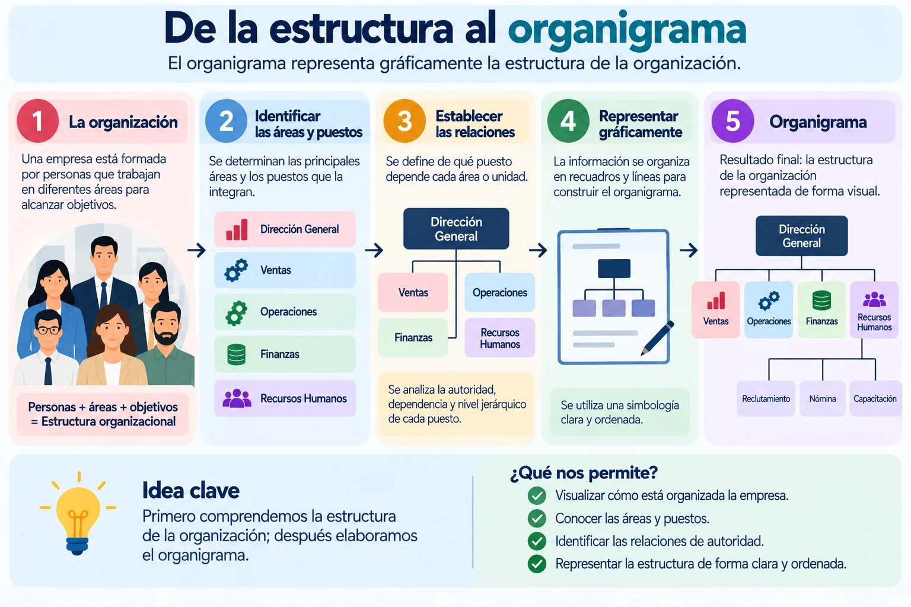
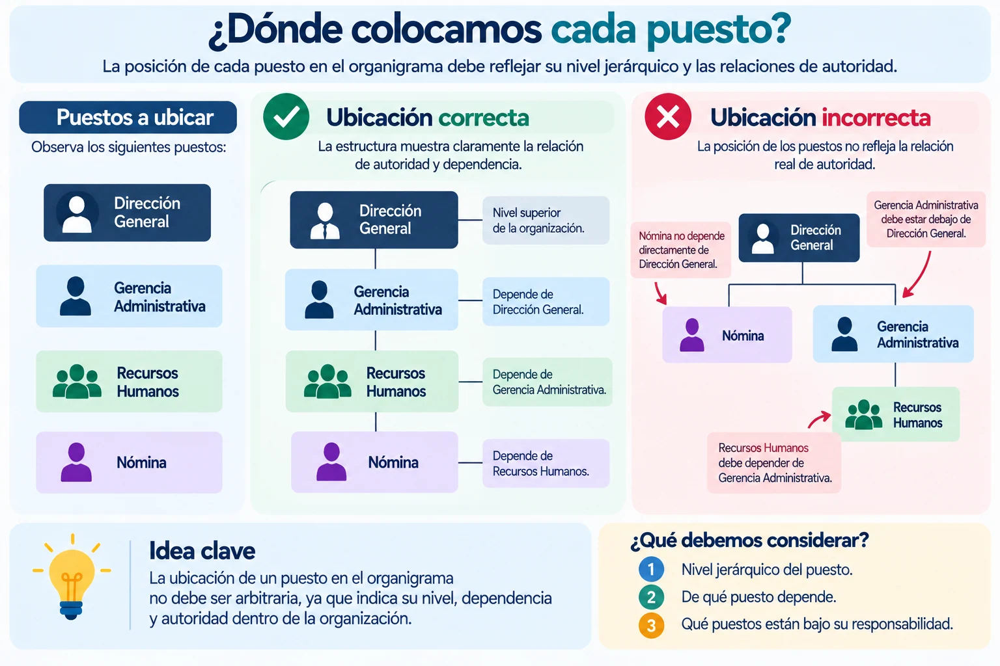
4.6 Etapas para la elaboración de un organigrama
4.6 Etapas para la elaboración de un organigrama
Elaborar un organigrama no consiste simplemente en acomodar recuadros. Primero debemos obtener y verificar la información de la organización y después representarla gráficamente.
1. Recopilar información
Primero necesitamos conocer la estructura real de la organización.
Podemos apoyarnos en documentos, entrevistas, descripciones de puestos y observación para identificar:
áreas – puestos – responsables – niveles de autoridad
2. Identificar áreas y puestos
Con la información obtenida determinamos qué unidades y puestos deben aparecer.
Es importante utilizar los nombres oficiales y evitar incluir puestos que ya no existen o dejar fuera aquellos que sí forman parte de la estructura.
3. Determinar las relaciones
Después establecemos:
quién depende de quién
y
qué puestos o áreas se encuentran bajo la responsabilidad de cada nivel.
Esta etapa permite construir correctamente la jerarquía.
4. Ordenar por niveles
Los puestos y unidades se acomodan de acuerdo con su posición dentro de la estructura:
NIVEL SUPERIOR → NIVELES INTERMEDIOS → NIVELES OPERATIVOS
5. Elaborar el organigrama
Con la estructura definida se realiza la representación gráfica utilizando recuadros, líneas y una distribución clara y uniforme.
El diseño debe facilitar la lectura, no complicarla.
6. Revisar y validar
Antes de considerarlo terminado debemos comprobar:
¿Están todas las áreas?
¿Los nombres son correctos?
¿Las dependencias están bien representadas?
¿Los niveles jerárquicos corresponden a la estructura real?
¿Es fácil de interpretar?
La validación debe realizarse con personas que conozcan la estructura de la organización.
Un error importante que debemos evitar
No debemos elaborar primero el dibujo y después intentar acomodar la organización dentro de él.
El orden correcto es:
CONOCER LA ORGANIZACIÓN → ANALIZAR SU ESTRUCTURA → REPRESENTARLA
Un buen organigrama comienza con información correcta, no con un buen diseño gráfico.
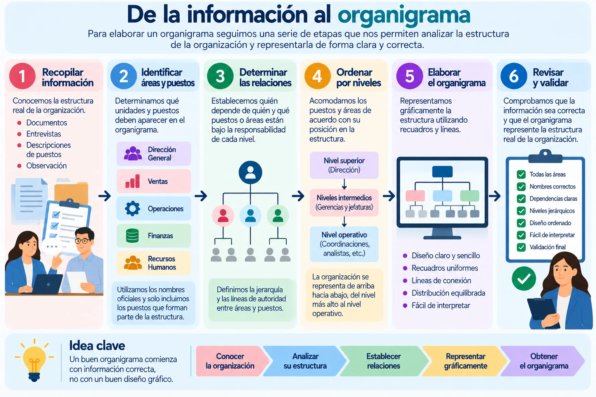
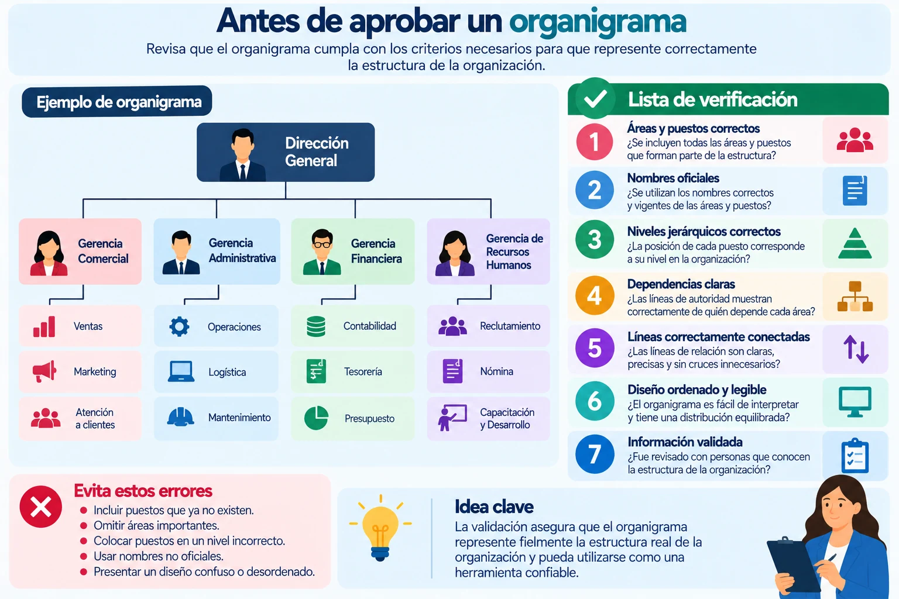
4.7 Mantenimiento organizacional
4.7 Mantenimiento organizacional
¿Qué es el mantenimiento organizacional?
El mantenimiento organizacional consiste en revisar y actualizar periódicamente la estructura de una organización para que continúe respondiendo a sus necesidades reales.
Una empresa puede cambiar porque:
CRECE – REDUCE PERSONAL – CREA ÁREAS – ELIMINA PUESTOS – CAMBIA RESPONSABILIDADES – INCORPORA TECNOLOGÍA – MODIFICA PROCESOS
Cuando esto ocurre, la estructura y sus documentos deben actualizarse.
¿Qué debemos revisar?
No se trata solamente de modificar el organigrama. También debemos comprobar que exista congruencia entre:
ESTRUCTURA → PUESTOS → FUNCIONES → AUTORIDAD → PROCEDIMIENTOS
Por ejemplo, si se crea una nueva Gerencia de Logística, debemos revisar:
¿De quién dependerá?
¿Qué puestos tendrá a su cargo?
¿Qué funciones asumirá?
¿Cambiarán las responsabilidades de otras áreas?
¿El organigrama y los documentos internos ya reflejan el cambio?
¿Cuándo debemos actualizar?
No es necesario esperar a que exista un problema grave.
Conviene revisar la estructura cuando existen cambios importantes como:
crecimiento de la empresa, nuevas áreas, eliminación o creación de puestos, redistribución de funciones, incorporación de tecnología o cambios en los procesos.
Ejemplo:
Una empresa incorpora ventas por internet y crea un área de Comercio Electrónico.
Si la empresa cambia pero mantiene su organigrama anterior, el documento deja de representar la realidad.
Por eso:
CAMBIO ORGANIZACIONAL → REVISIÓN → ACTUALIZACIÓN → VALIDACIÓN
Una estructura útil debe representar cómo funciona la organización actualmente, no cómo funcionaba en el pasado.
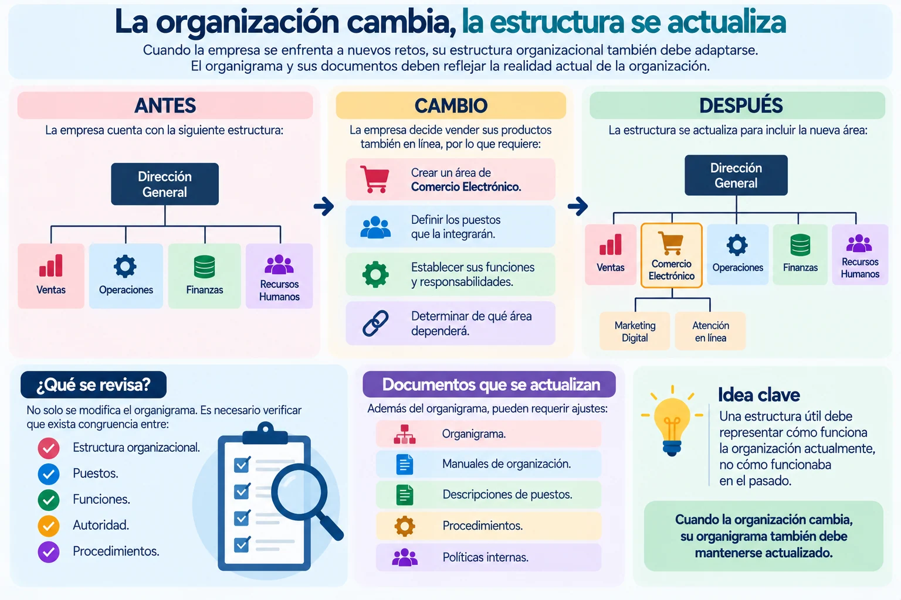
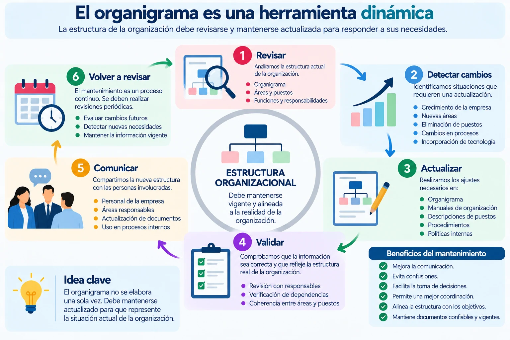